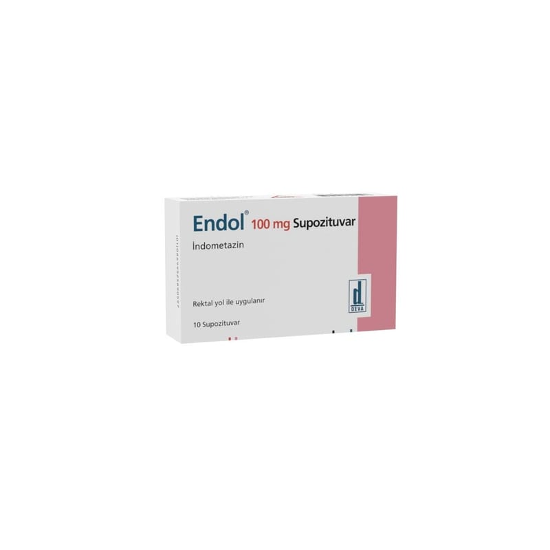

<!DOCTYPE html><html lang="tr"><head><meta charset="utf-8"><meta name="viewport" content="width=device-width,initial-scale=1"><meta name="referrer" content="strict-origin-when-cross-origin"><title>Endol 100 mg Supozituar, 10 Adet – Kullanma Talimatı | İlaç Pro</title><meta name="description" content="ENDOL SUPOZ ĐTUAR etkin madde olarak indometasin içerir. Bu, steroid olmayan antiinflamatuar ilaç veya NSAID olarak…"><link rel="canonical" href="https://mustafayalvac244-tech.github.io/ilacpro-veri/ilac/8699525890597.html"><meta property="og:type" content="article"><meta property="og:locale" content="tr_TR"><meta property="og:title" content="Endol 100 mg Supozituar, 10 Adet – Kullanma Talimatı"><meta property="og:description" content="ENDOL SUPOZ ĐTUAR etkin madde olarak indometasin içerir. Bu, steroid olmayan antiinflamatuar ilaç veya NSAID olarak…"><meta property="og:image" content="https://mustafayalvac244-tech.github.io/ilacpro-veri/gorsel/8699525890597.jpg"><meta property="og:image:width" content="800"><meta property="og:image:height" content="800"><meta property="og:image:type" content="image/jpeg"><meta property="og:url" content="https://mustafayalvac244-tech.github.io/ilacpro-veri/ilac/8699525890597.html"><link rel="stylesheet" href="_sayfa.css"></head><body data-id="77b6e6cb5031"><main><header>İlaç Pro · Kullanma Talimatı (TİTCK)</header><h1>Endol 100 mg Supozituar, 10 Adet</h1><figure></figure><section id="nedir"><div class="bas"><h2>Ne için kullanılır</h2><small>KT · Bölüm 1</small></div><p>ENDOL SUPOZ ĐTUAR etkin madde olarak indometasin içerir. Bu, steroid olmayan antiinflamatuar ilaç veya NSAID olarak bilinen ilaç grubuna aittir. Etkisini, vücudun ağrıya ve rahatsızlığa neden olabilen iltihabı üretme yetisini azaltarak gösterir. A ağıdaki sorunlardan birini yaadığınız için doktorunuz size ENDOL vermitir:</p><p>• Romatoid artrit (genel olarak eklem hastalığı)
• Osteoartrit (eklem hastalığı)
• Ankilozan spondilit (genellikle sırtı etkileyen artrit türü)
• Ortopedik ameliyat sonrası ağrı, iltihap ve ime
• Kas ve iskelet rahatsızlıkları (kasların ve kemiklerin rahatsızlanması)
• Regl ağrısı
• Sırtın alt kısmında a ğrı
• Kalça eklemi hastalığı
• Akut gut artriti (eklemlerde kristallerin biriktiği bir artrit türü)</p></section><div id="kt"></div></main><footer><p>Kaynak: <a id="pdf" href="https://titck.gov.tr/storage/kubKtAttachments/14db997587390.pdf" rel="noopener">TİTCK Kullanma Talimatı</a> · onay 16.02.2015</p><p>Bu sayfa yorum içermez; metin Kullanma Talimatı'ndan olduğu gibi alınmıştır.</p><p>İlaç Pro tıbbi tavsiye vermez, tanı koymaz, doz önermez ve bir tıbbi cihaz değildir. Kullanma Talimatı metinleri TİTCK'dan olduğu gibi aktarılır. İlaç kullanımıyla ilgili kararlar için doktorunuza veya eczacınıza danışın.</p></footer><nav><a class="btn b1" id="ac" href="ilacpro://ilac/8699525890597">Uygulamada aç</a><a class="btn b2" id="indir" href="../indir/">İlaç Pro'yu indir</a></nav><script src="_sayfa.js" defer></script></body></html>